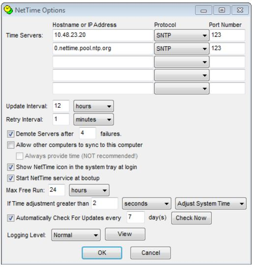

Acoustics Set Up
1. Networking Overview:
Most science systems will be on a Science network provided by the ship and use an IP address of 192.168.123.XXX. The following systems will be on the Science network:
- NAS storage devices
- Echoview Processing Computer – Ideally this computer will have the capability to access SCS.
There are some ship systems that we need access to which are hosted on a Mission network and use an IP address of 10.48.23.XXX. We need access to the following systems on the Mission network:
- Scientific Computer System (SCS).
- Computers in the Chemical Lab. – Ideally this computer would have the capability to put files on the
Sciencenetwork too. These computers will be used for entering trawl biological data. - The time server. Most sounder computers have
NetTimeinstalled on them, and set to sync with the ship’s time server using the following settings:

2. Setting up the Echoview PC:
2.1. Networking
Mapping to the Synology NAS Device
In order to connect the NAS (Network Attached Storage) Synology Device, you will need to map to the Synology and enter in a username and password. If the NAS becomes disconnected, you would follow this same process to reconnect it. In PC File Explorer, click on This PC on the left hand navigation column –> navigate to Computer at the top navigation bar –> Map network drive -> Drive: choose an empty drive with no name; Folder: type in the address for the appropriate NAS device below -> check Connect using different credentials –> Finish -> You will be prompted to enter a username and password. Enter in the corresponding credentials for your chosen NAS device below.
Address (NAS1): \\192.168.123.23\ast-data
- Username: swc-ast-nas\astnasmin
- Password: BvKUazyaQcNDB6oH
Address (NAS2): \\192.168.123.24\ast-data
- Username: swc-ast-nas2\astnasmin
- Password: BvKUazyaQcNDB6oH
Mapping to the ship SCS computer
If CTD data on the ship’s SCS server (called log40). On the Echoview PC, this directory is mapped using the following:
Address: \\10.48.23.223\log40
- Username: omao\survey.rl
- Password: SouthernSun1
Set up Syncback Profiles:
Data is automatically backed up from echosounder acquisition computers to the NAS via a set of Syncback profiles that do the following. Last year’s Syncback profile can be located here [add GD link].
- Mirrors the survey directory (C:\SURVEY\2407RL) to the NAS
- Backs up all the EK80 data (both 18 kHz PC and 38-200 kHz PC) to the NAS
- Backs up select SURVEY files to a Cloud Storage Drive (TBD)
Set up Licenses:
- Plug the Echoview license thumb drive into the Echoview PC.
Set up UCTD bluetooth:
- Plug the UCTD Valeport Blue Soleil thumb drive into the Echoview PC.
2.2. Computer File Set Up:
- [Kevin add details on how to set up estimATM on the Echoview PC. Do you clone the github repository?]
- Download the most recent ENC charts for CA, OR, WA, and AK from Office of Coast Survey and put them in a folder called
Chartson the C:\ Drive. - Download the pre-made Coastal Explorer .nob file for the survey from the shared AST Google Drive and put it under C:\SURVEYS\[SURVEY DATE AND NAME]\PLANNING\NAV.
3. Setting up the EK80:
EK80 software is run on two computers: (1) The ship’s EK80 PC, located in server rack, and (2) AST’s PC, located on the port side of the Acoustic’s Lab across from ship EK80 PC. The ship’s EK80 PC operates the non-18-kHz WBTs. AST’s EK80 PC is operating the 18-kHz WBT and the EC150-3C. Confirm version of EK80 software is the most recent version on both computers.
3.1. Networking:
A SyncbackFree profile on the Echoview PC backs up data from both PCs to the NAS drive (\\192.168.123.24\ast-data\2407RL\ACOUSTIC_DATA) every 15 minutes.
3.2. Settings for both the Ship EK80 PC and the AST EK80 PC:
Ping Modeset to maximum.Recording Rangeset to on.Drop Keelsensor configuration should reflect the centerboard’s current position. Confirm with the ship Survey Tech that drop keep is updated.- Set files to save as the maximum allowable file size (Output -> File Setup -> File Size -> check
Maximum).
3.3. Settings for AST EK80 PC - 18 kHz WBT PC:
Set Save Location:
- The AST 18-kHz PC is set save files directly to an external 4-TB HDD.
Installation Settings:
Transducer Installation:
The 18-kHz transducer is set to a “Drop Keel” mounting installation, then the X and Y-Offset parameters set to the Translated Frame as specified in the IMTEC survey. The Drop Keel depth is manually specified in the Sensor Configuration menu (see further below), which effectively sets the Z-Offset coordinate for the 18-kHz transducer relative to the waterline.


I/O Set Up:
| Device | COM Port | Baud Rate | Notes |
| K-Sync Trigger | 1 | 4800 | RS232 trigger from K-Sync “EK 60” Module, split off the serial cable to the ship’s EK80 PC |
| POS-MV | 8 | 57600 | KM Binary from COM2 on POSMV |
| Depth Output | 11 | 4800 | Outputs DBT telegram to SCS, primarily so SCS can relay to EAL for false bottom removal |
Sensor Installation:
| Type | Port |
| KM Binary | POS-MV (COM4) |
Sensor Configuration:
| Sensor | Source |
| Drop Keel [CONFIRM] |
Manual depth of: Intermediate = 7.35 m Extended = 9.1 m |
| Heading | MotionBinaryEx from KM Binary From POSMV |
| Course | SpeedGround from KM Binary From POSMV |
| Position | Position from KM Binary from POS MV |
| Speed | SpeedGround from KM Binary from POS MV |
Set up User Setting Profiles:
Create two user setting profiles. One called [SURVEY NAME]_Dayand one called [SURVEY NAME]_Night (2407RL_Night). Set up all day user settings then save as a user profile. Set up all night settings then save as a user profile.
Day User Settings:
18-kHz EK80:
- CW mode
- 100-m display range
- Auto recording range
- Bottom detection enabled down to 4000 m
EC150-3C:
ADCP mode
FM pulses
Logging range = 300 m

Night User Settings:
18-kHz EK80:
- CW mode
- 100-m display range
- Auto recording range
- Bottom detection enabled down to 4000 m
EC150-3C:
- Echosounder mode
- CW pulses
- Logging range = 100 m
Set up the EAL on the AST 18-kHz PC:
Open the EAL .exe file. For daytime, the EAL will be used to detect the seabed and adjust the logging and display range, but will not correct false bottoms.
This has been working pretty well, and the EAL has been able to track the seabed pretty consistently, although sometimes it’s good to periodically verify that it’s detecting the bottom correctly. If not, the EAL’s Settings.txt file should be open in Notepad++, so open that and temporarily change the 18-kHz Max Logging Range to just below the actual seabed depth and save the text file. Once the EAL detects the correct depth, change the Max Logging Range back to 4000 m and save the text file.

3.4. Settings for the Ship EK80 PC:
The ship’s EK80 PC is used to operate the 38, 70, 120, 200, and 333-kHz WBTs. Create two user setting profiles. One called [SURVEY NAME]_Dayand one called [SURVEY NAME]_Night (2407RL_Night).
Set Save Location:
The Ship EK80 PC is set to save files to the largest local computer dive. The EK80 software is set to record to the ship’s “Big Data” drive (E:\2407RL\RAW\).
Installation Settings:
Transducer Installation:
All transducers are set to a “Drop Keel” mounting installation, then the X and Y-Offset parameters set to the Translated Frame as specified in the IMTEC survey:
| Transducer | X Offset | Y Offset | Z Offset |
| ES38-7 (SN 337) | -8.65 | 0.02 | 0.00 |
| ES70-7C (SN 233) | -9.82 | -0.10 | 0.00 |
| ES120-7C (SN 783) | -9.72 | 0.20 | 0.00 |
| ES200-7C (SN 513) | -9.97 | 0.19 | 0.00 |
| ES333-7C (SN 124) | -8.27 | 0.02 | 0.00 |
| EC150-3C (SN 120) | -10.28 | 0.02 | 0.00 |
I/O Setup:
| Device | COM Port | Baud Rate | Notes |
| K-Sync | 1 | 4800 | |
| Gyro | 2 | 4800 | Fast setting from Gyro |
| GPS in | 3 | 4800 | |
| POS MV | 4 | 57600 | KM Binary from COM2 on POSMV |
Sensor Installation
| Type | Port/IP Address | Baud Rate |
| ITI-FS | ITI From SCS (ethernet input) | NA |
| KM Binary | POS-MV (COM4) | 57600 |
| Gyro | Gyro (COM2) | 4800 |
| Sound Velocity from SCS | Local port: 20004 Local IP Address: 192.168.123.20 Remote IP Address, 10.48.23.223 |
Sensor Configuration
| Sensor | Source |
| Attitude | MotionBinaryEx from KM Binary From POSmv |
| Drop Keel | Manual depth of: Retracted = 5.9 m; Intermediate = 7.35 m; Extended = 9.1 m. |
| Heading | MotionBinaryEx from KM Binary From POSmv |
| Course | SpeedGround from KM Binary From POSmv |
| Position | Position from KM Binary from POS MV |
| Speed | SpeedGround from KM Binary from POS MV |
Set up User Setting Profiles:
Create two user setting profiles. One called [SURVEY NAME]_Dayand one called [SURVEY NAME]_Night (2407RL_Night). Set up all day user settings then save as a user profile. Set up all night settings then save as a user profile.
Day User Settings:
Display colors: -70 dB (top) and -50dB (bottom)
Ping Mode: Maximum
CW Mode
Individual ranges: Output -> File Setup -> Raw Data -> Channel Recording Range -> select
IndividualLogging Ranges:
Frequency (kHz) 38 70 120 200 333 Max Logging Range (m) 500 500 500 300 200 Normal Operation Settings:

Night User Settings:
Display colors: -70 dB (top) and -50dB (bottom)
Ping Mode: Maximum
FM Mode
Logging Range set to 100 m. The EK80s will not be controlled by the EAL during nighttime operations, as will be recording data to 100 m, independent of the bottom depth.
Set up the EAL on the Ship EK80 PC:
During daytime, the EK80 software is remotely controlled by the EAL on the ASUS5 laptop (aft desk in Acoustic’s Lab), and as such is configured to act as a server (Installation → Remote Control → As Server → Local IP Address → select IP of adapter connected to ship’s Science network). The EAL will adjust the frequency-dependent display and logging ranges based on the seabed depth, and the ping rate via the depth input to the K-Sync.

4. Setting up K-Sync:
The K-Sync is sending trigger signals to the EK80s, ME70, MS70, SX90, and ADCP. All sounders are placed into a single group, and thus should transmit simultaneously. However some sounders may not transmit on every trigger depending on logging and display range settings.
The K-Sync modules can be configured by going to Settings–>Installation then entering ‘simrad0’ as the password. In there, the KSync modules are configured as:
| Module # | Module Name | Output Type | Echosounder |
| 1 | EK 60 | RS232 | 18-kHz EK80 PC |
| 2 | ME70 | RS232 | ME70 PC |
| 3 | EK 80 & MS 70 | RS232 | MS70 PC |
| 4 | SX 90 | RS232 | SX90 PC |
| 5 | OS 75 | TTL | OS 75 |
| 6 | EK80 Mux | TTL | EK80 WBT Auxiliary |
| 7 | EK60 Mux | TTL | |
| 8 | EK60_Aux | TTL |
The K-Sync will adjust the trigger period based on a depth value sent by the EAL, which should be indicated by the “Current depth” reading. If the EAL is not on (e.g., nighttime), the K-Sync should be set for “Use manual depth” with a specified depth of 150 m.
The EK80s are triggered via RS-232 signals input to their respective operating PCs.
5. Setting up the Trawl PC:
The trawl database is located on the ship’s computer on the forward-starboard wall in the Chem lab. That computer has a SyncBack profile which backs up the trawl database and TDR data to the SURVEY directory on our Echoview PC (C:\SURVEY\2407RL). It also backs up plotSurvey and checkTrawls from the Echoview PC to their trawl PC, so that they can see the latest results after we knit those scripts.
Set up Syncback Profiles to do the following:
Backs up trawl database and TDR data to SURVEY drive on Echoview PC
Backs up plotSurvey and checkTrawls from Echoview PC to Trawl PC
6. [DRAFT] Setting up TD50
7. [DRAFT] Setting up SX90
- Syncback backs up SX90 data from 4-TB external HDD to the NAS
8. [DRAFT] Setting up ME70
- Syncback backs up ME70 data from 4-TB external HDD to the NAS